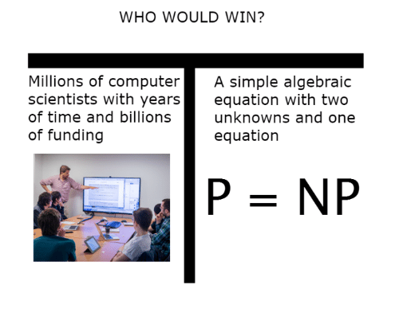
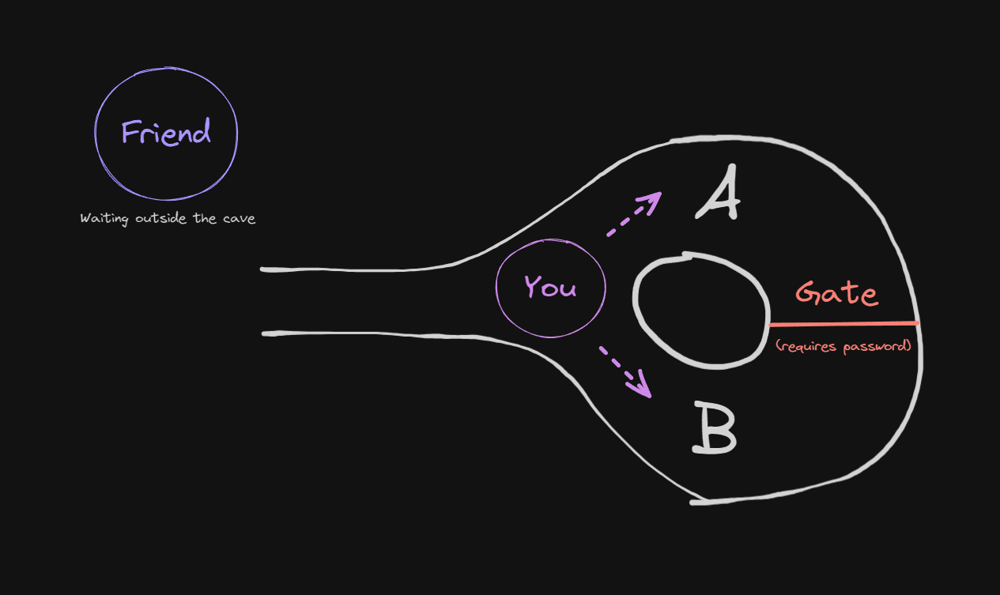
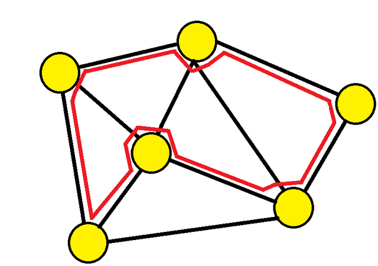

It's Okay, Nobody Gets It Either: Zero-Knowledge Proofs
Before anything, don’t worry if you don’t understand anything. As the title suggests this post will provide you with zero knowledge. In fact, one may call them negative-knowledge proofs as they are one of the rare things that will leave you will fewer brain cells than at the beginning.
Ever said ‘On God’ to someone, hoping they’d believe you even without any actual evidence? Well, zero-knowledge proofs are a bit similar. They let you prove that you know something without revealing it.
This topic is fairly complex. Before diving into what zero-knowledge proofs are, let’s make sure that our foundations are rock solid.
Wait a minute… what is a proof?
A proof is a logical argument that demonstrates the truth of a statement. For example, what proves that I am French ? Most would say that it is my pretty face coupled with my love for bread, wine, and cheese. While I can’t disagree, the strongest proof that I am French is my parentage. Indeed, In France, we have what is called jus sanguinis (blood right), meaning that if one of your parents is French you are automatically granted the French nationality. My parents being both French and the blood right being in effect, I am French.
To formally describe proofs, especially in computational complexity and cryptography, we break them down into four key components:
-
Language $(\mathcal{L})$ - It consists of all valid inputs that satisfy a given property.
Example: Consider the set of all composite numbers (i.e., not prime). The language here is
$$\mathcal{L} = \{x | x \text{ is not a prime number}\}$$ -
Verifier $(\mathcal{V})$ - A function (which can be thought of as an algorithm) that checks whether a given statement belongs to the language. It takes an input and a proof and determines whether the proof is valid.
Example: A verifier for composite numbers might check whether a given number has any divisors other than $1$ and itself.
-
Witness $(w)$ - A piece of evidence that helps convince the verifier that the statement is true. It is sometimes referred to as the certificate $(c)$.
Example: If someone claims that $91$ is not prime, a witness could be a divisor like $7$ (since $91 = 7 \times 13$)
-
Prover $(\mathcal{P})$ - The entity that constructs and presents a proof to convince the verifier
Example: The prover knows $w = 7$ and want to convince the verifier that $91$ belongs to $\mathcal{L}$ (i.e. that $91$ is composite).
Note that we will only consider NP-Complete problems here. I won’t elaborate on them, but just think of them as all problems for which a solution is easy to verify but hard to find (e.g., a sudoku). If you’re interested, here’s an easy way to make some pocket money.
What does it mean for a proof to be zero-knowledge?
We refer to people following the protocol properly as honest.
For the proof a given statement to be zero-knowledge it must satisfy three properties:
-
Completeness - If a statement is true, then an honest verifier will be convinced of this fact by an honest prover .
In other words, if what you claim to be true is true, the verifier will always validate your claim.
-
Soundness - If the statement is false, then no cheating prover can convince an honest verifier that it is true, except with some small probability.
In other words, if what you claim to be true is false, the verifier will almost always reject your claim. While probabilistic, the error probability is so small that we are okay with this not being true exactly 100% of the time.
-
Zero-knowledge - If the statement is true, then no verifier learns anything other than the fact that the statement is true.
In other words, the verifier knows that I know but does not know what I know.

Zero-knowledge proofs can be subdivided into two categories:
-
Interactive - This means that the prover and the verifier exchange multiple messages.
-
Non-interactive - This means that the verifier is convinced by a single message.
Interactive zero-knowledge proofs
We define an interactive proof as follows:
$(\mathcal{P}, \mathcal{V})$ is an interactive proof for $\mathcal{L}$ (our language), if $V$ is $probabilistic-poly(|x|)$ and:
- $x\in \mathcal{L} \Rightarrow \Pr[(\mathcal{P}, \mathcal{V})(x) = \text{accept}] \ge c$
- $x \notin \mathcal{L} \Rightarrow \forall \ \mathcal{P}^* , \ \Pr[(\mathcal{P}^*, \mathcal{V})(x) = \text{accept}] \le s$
We will start by picturing what an interactive proof looks like and how can it reveal no information using the Ali Baba Cave example as well as the Hamiltonian Cycle example.
Ali Baba and his cave
Picture this: You are in front of a cave with a single entrance that branches into two paths, $A$ and $B$. These paths are separated by a password-protected door. Without the password, one must exit the cave using the same path they entered.
You, the prover, claim to know the password. I, the verifier, want to confirm this without you revealing the password to me.
How can I be sure that you indeed know the password without you telling me the password and trying out myself ?
Here’s how we can achieve this:
- You enter the cave without me seeing which path you take.
- I then ask you to exit the cave using a specific path, say $A$.
There are four possible outcomes:
- You don’t know the password but luckily chose path $A$ initially.
- You don’t know the password and chose path $B$, so you exit through $B$.
- You know the password and happened to choose path $A$ initially.
- You know the password, initially chose $B$, but can use the password to exit through $A$.
If you exit through $B$ when asked to use $A$, I’ll reject your claim because you either don’t have the password, or you have the password but are too dumb for me to accept you. If you exit through $A$, I won’t immediately accept your claim, as you might have been lucky.
If we perform this experience only once, and you happen to exit the cave taking path $A$, there is a $50$ percent chance that you don’t have the password and were just lucky.
That’s where the iterative aspect of these proofs comes into play: Each time we replay this cave adventure, with me randomly picking your exit path, your odds of consistently lucking out plummet. It’s like trying to win a coin toss not just once, but over and over again.
$$ \lim_{n \to \infty}{\frac{1}{2^n}} = 0 $$Obviously we don’t repeat this experience an infinite amount of time but we do so until this probability becomes too small for us to care.
Now what about a more math-focused example ?
Hamiltonian cycle for a graph
Let there be a graph $G$ which is very large.
You, the prover, claim to know a Hamiltonian cycle (that is, a path that visits each vertex exactly once) for $G$. I, the verifier, want to confirm this without you revealing this cycle to me.
To achieve this, we will modify our previous cave adventure and do the following for each round:
-
You create a graph $H_i$ which is isomorphic to $G$ (that is, the same graph as $G$ except the vertices have different names).
$\Rightarrow$ It’s easy to translate a Hamiltonian cycle between isomorphic graphs and thus you also know a Hamiltonian cycle for $H_i$.
-
You commit $H_i$ such that you cannot modify it afterward.
-
I then ask you to show either the isomorphism between $H_i$ and $G$ or a Hamiltonian cycle in $H_i$.
If you do know a Hamiltonian cycle in $G$, then it is pretty easy for you to submit a graph $H_i$ that is isomorphic to $G$ and for which you know a Hamiltonian cycle.
On the other hand, if you don’t know any Hamiltonian cycle in $G$, you have to take a guess on which question I am going to ask:
- If you think that I will ask you to show the isomorphism between $H_i$ and $G$, you simply need to submit a graph $H_i$ isomorph to $G$.
- If you think that I will ask you to show a Hamiltonian cycle in $H_i$, you simply need to submit a graph $H_i$ for which you know a Hamiltonian cycle.
There is basically no way for you to correctly answer my question if your prediction is incorrect.
Once again, you might be lucky at first but as the number of iterations increases, the probability that you do not know a Hamiltonian cycle in $G$ becomes negligible.
Note that $H_i$ is different for each iteration. If it was not, I could deduct the Hamiltonian cycle in $G$ in only two iterations by first asking you about a Hamiltonian cycle in $H_i$, and then asking about an isomorphism between this same $H_i$ and $G$.
So what ? We showed for two different problems that we could provide a proof that did not reveal information. I can already picture you saying that the approaches were totally different and that it might be difficult to do the same thing for every problem. Well, you would be right to question this approach as it is hard to generalize. However, let me introduce you to a very cool concept from theory of computation: reductions.
This concept is a bit tricky and I won’t go into details but BASICALLY, it means that a problem $A$ can be converted to a problem $B$ if $B$ is at least as hard as $A$.

Furthermore, we have one category of problems that are referred to as “satisfiability problems” which ask if a problem has a solution. Satisfiability problems are actually very hard and that’s great because it is relatively easy to go from a problem $A$ to one of these problems (you just need to formulate your problem correctly).
Take a step back, take a deep breath, and think about it: That’s amazing because now, we only need to develop one (or just a few) algorithm that let us prove a solution to a satisfiability problem without revealing it.
Think of it this way: You know how to go from Rome to somewhere in the desert. The following great theorem “All roads lead to Rome” tells you that to go from anywhere in the world to this point in the desert you don’t need to find a new route. You just need to go to Rome and then go to the point in the desert.
What about achieving the same result as before but without interactions ? Well, it’s possible and we call this Zero-Knowledge Succinct Non-Interactive Argument of Knowledge a.k.a. zk-SNARK.